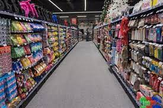
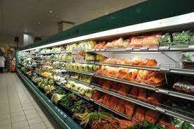

Spar
Checkers is a FMCG retailer owned by Shoprite that operates in Southern Africa. Checkers currently has 37 Checkers Hypers and 202 Checkers supermarkets operating in Botswana, South Africa and Namibia. ... Norman Herber, the chair of Greatermans department stores, was the founder of Checkers.
What is the vision of checkers? The Shoprite Checkers family's collective mission is to bring products and services to market that delight in both quality and price, and we're able to do that thanks to a shared commitment to our customers.